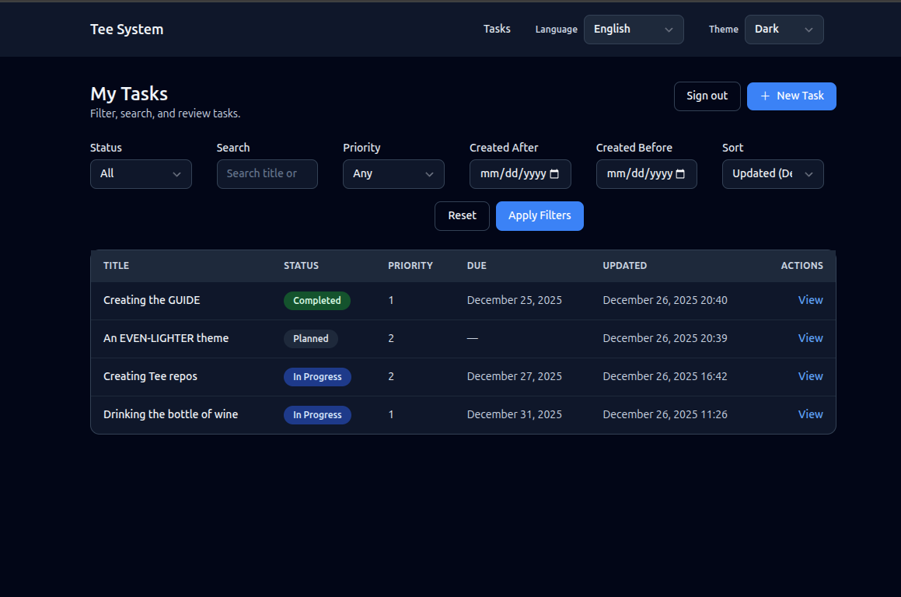
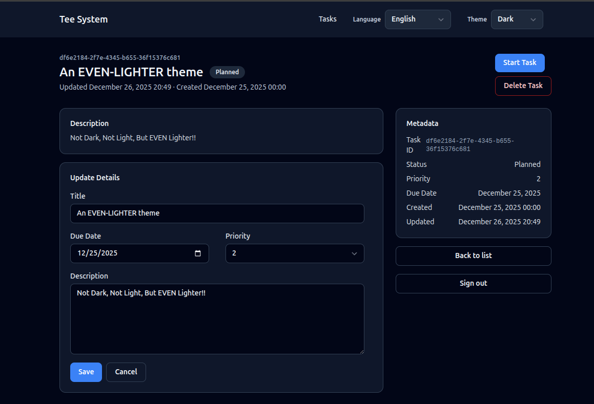
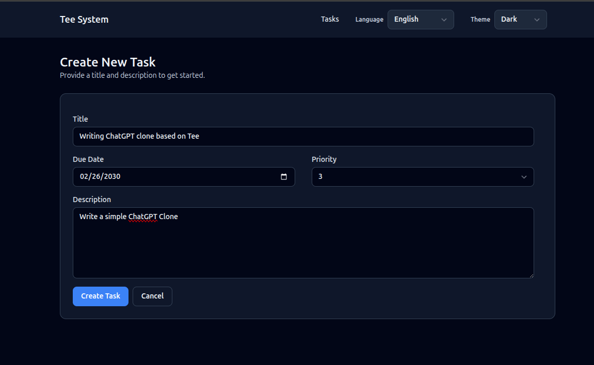

Introduction
This guide is a slow, human-friendly walk through the Task example in the Tee system. It is written for junior developers who know basic Rust but may be new to web services, SQL, and layered architecture.
By the end, you should be able to:
- Explain how the Tasks UI works end to end.
- Trace a request from the browser to the database and back.
- Understand why the code is split into interface, app, domain, and data layers.
- Extend the system in safe, predictable ways.
Who this guide is for
You should be comfortable with:
- Basic Rust syntax (structs, enums, impl blocks).
- Reading and running a Cargo project.
- Basic HTTP concepts (GET, POST, status codes).
You do not need to be an expert in Axum, SQLx, or Postgres. We will explain concepts as they appear.
How to read this guide
We start with what users see (the Task list and detail views), then move inward to the system layers and infrastructure. This mirrors how most people learn: start with a feature, then open the hood.
Sections include:
- Small code excerpts (never the full file).
- Diagrams for request flow.
- Exercises you can try on your own.
What is the Tee system?
The Tee system is a simple, strict architecture:
- One Rust service.
- One Postgres database.
Inside the Rust service there are logical layers:
- Interface: HTTP routing and request handling.
- App: commands and queries.
- Domain: rules and types.
- Data: SQL and database access.
This keeps the system easy to reason about and easy to operate. There is no message broker, no cache tier, and no separate read service.
Repository layout (high level)
src/
interface/ # HTTP routes, auth, templates, i18n
app/
commands/ # state-changing use cases
queries/ # read-only use cases
domain/ # domain logic and policies
data/ # SQL and database access
migrations/ # schema changes
templates/ # Askama HTML templates
static/ # CSS and assets
locales/ # translation files
If this structure is new to you, do not worry. We will visit each folder in depth.
Code example: service startup
This is the real entry point in src/main.rs. It shows the order of startup:
load config, initialize logging, connect to the database, run migrations,
load translations, build the router, and start the server.
mod app;
mod data;
mod domain;
mod interface;
mod ops;
use anyhow::Context;
use interface::i18n::{Translator, DEFAULT_LOCALE, REQUIRED_LOCALES};
#[tokio::main]
async fn main() -> Result<(), anyhow::Error> {
let cfg = ops::config::Config::from_env().context("reading config")?;
ops::observability::init(&cfg.log_level);
let pool = data::db::new_pool(&cfg.database_url)
.await
.context("connecting to database")?;
sqlx::migrate!("./migrations")
.run(&pool)
.await
.context("running migrations")?;
let translator = Translator::load_from_disk("locales", DEFAULT_LOCALE, REQUIRED_LOCALES)
.context("loading translation bundles")?;
let auth_settings = interface::state::AuthSettings::new(
cfg.session_lifetime,
cfg.session_idle_timeout,
cfg.remember_me_lifetime,
);
let router = interface::http::build_router(pool, auth_settings, translator);
let listener = tokio::net::TcpListener::bind(&cfg.bind_addr)
.await
.context("binding TCP listener")?;
tracing::info!("listening on {}", cfg.bind_addr);
axum::serve(listener, router)
.await
.context("serving HTTP")?;
Ok(())
}Glossary (quick)
- Command: a function that changes state (create, update, delete).
- Query: a function that reads state without changing it.
- Transaction: a group of database operations that succeed or fail together.
- Soft delete: marking a row as deleted without removing it.
- Optimistic concurrency: rejecting updates if the data changed since you read it.
Next: Architecture Overview.
Architecture Overview
The Tee system is built to be boring in the best way: simple to deploy, easy to understand, and predictable under load. This chapter explains the big picture before we dive into the Task screens.
Two physical layers only
The Tee system runs as:
- One Rust service (the “Tee service”).
- One Postgres database (the “Tee store”).
No extra services are required. This is a deliberate design choice from
docs/Tee-Architecture-Guidelines.md.
Logical layers inside the service
Even though the service is one binary, the code is split into logical layers:
Interface -> App -> Domain -> Data
- Interface: HTTP, templates, auth, i18n.
- App: commands and queries.
- Domain: business rules and types.
- Data: SQL and database access.
The rules are strict:
- Interface never talks to the database directly.
- Domain never uses HTTP or SQL types.
- Data never implements workflows or policies.
Command and query split
Commands change data. Queries read data. This is sometimes called “logical CQRS” (without extra infrastructure).
Examples:
- Command: start a task.
- Query: list tasks.
This split makes it clear where writes happen and where reads happen. It also makes testing easier.
Code examples from the real project
Router wiring and middleware live in src/interface/http.rs:
#![allow(unused)]
fn main() {
pub fn build_router(pool: sqlx::PgPool, auth: AuthSettings, translator: Translator) -> Router {
Router::new()
.merge(routes_web::router(pool, auth, translator))
.nest_service("/static", ServeDir::new("static"))
.layer(TraceLayer::new_for_http())
.layer(CompressionLayer::new())
.layer(TimeoutLayer::with_status_code(
axum::http::StatusCode::REQUEST_TIMEOUT,
Duration::from_secs(10),
))
.layer(RequestBodyLimitLayer::new(1024 * 1024)) // 1 MiB
.layer(PropagateRequestIdLayer::new(HeaderName::from_static(
"x-request-id",
)))
.layer(SetRequestIdLayer::new(
HeaderName::from_static("x-request-id"),
MakeRequestUuid,
))
}
}A command (write) example from src/app/commands/create_task.rs:
#![allow(unused)]
fn main() {
pub async fn handle(
pool: &PgPool,
principal: &Principal,
cmd: CreateTaskCommand,
) -> Result<Uuid, CreateTaskError> {
shared::ensure_authorized(
policy::can_create_task(principal),
CreateTaskError::NotAuthorized,
)?;
let title = TaskTitle::parse(&cmd.title_raw)?;
let description = TaskDescription::parse(&cmd.description_raw)?;
let priority = TaskPriority::parse(cmd.priority_raw.unwrap_or(3))?;
let mut tx = pool.begin().await?;
let id = task_repo::insert_task(
&mut *tx,
title.as_str(),
description.as_str(),
cmd.due_at,
priority.as_i16(),
)
.await?;
tx.commit().await?;
tracing::info!(task_id = %id, "task created");
Ok(id)
}
}A query (read) example from src/app/queries/list_tasks.rs:
#![allow(unused)]
fn main() {
let params = task_repo::ListTasksParams {
status: status_filter,
created_after: query.created_after,
created_before: query.created_before,
search: query.search.as_deref(),
priority: query.priority,
sort: query.sort.as_deref(),
limit: query.limit,
};
let rows = task_repo::list_tasks(pool, params).await?;
}Why this matters for juniors
When you are new, big codebases can feel confusing. The Tee system reduces surprises by making every layer explicit. You always know:
- Where to add a new route.
- Where to add a new use case.
- Where to add a new SQL query.
End-to-end flow (bird’s eye)
sequenceDiagram
participant Browser
participant Interface as Interface Layer
participant App as App Layer
participant Domain as Domain Layer
participant Data as Data Layer
participant DB as Postgres
Browser->>Interface: HTTP request
Interface->>App: call command or query
App->>Domain: validate rules
App->>Data: run SQL
Data->>DB: query/transaction
DB-->>Data: result
Data-->>App: rows
App-->>Interface: result or error
Interface-->>Browser: HTML or redirect
Exercise
Read src/app/commands/create_task.rs and identify:
- Where the authorization check happens.
- Where the transaction starts.
- Where SQL is called (hint: it is not in this file).
Next: Task List View.
Task List View
The Task list view is the home page of the example application. It introduces most of the system in a safe, read-only way.
What the user sees
- A list of tasks, each with title, status, priority, due date, and last updated.
- Filters for status, priority, and created date range.
- Sorting by updated date, due date, or priority.
- A primary action to create a new task.
Task list screen image

Route and handler
The list view is served by:
- Route:
GET /tasks - Handler:
tasks_listinsrc/interface/routes_web.rs - Template:
templates/tasks_list.html
The handler does four things in order:
- Check authentication (must be logged in for the UI routes).
- Read and validate query parameters (filters and sort).
- Call the query layer to fetch tasks.
- Render the template with a view model.
How the page is rendered
This project uses server-rendered HTML. That means:
- The handler builds a Rust struct with all the data the template needs.
- Askama renders HTML on the server.
- The browser receives plain HTML.
There is no client-side framework that fetches data after page load. This keeps the behavior predictable and fast to reason about.
User interactions
When a user changes filters or sorting:
- The browser sends a new GET request with query parameters.
- The handler re-runs the query with those filters.
- A new HTML page is returned.
This is simple but powerful. It works even if JavaScript is disabled.
Filtering and validation (explained)
Look at the handler in src/interface/routes_web.rs. It uses helper functions to
parse and validate filters:
parse_date_filterfor created dates.parse_priorityfor priority range.TaskStatus::parsefor status.
Why validate here?
- The handler is the boundary where raw strings become typed values.
- The query layer assumes already-validated input.
Query layer: read-only by design
The handler builds a ListTasksQuery:
#![allow(unused)]
fn main() {
let query = queries::list_tasks::ListTasksQuery {
status,
created_after,
created_before,
search: params.q.clone().filter(|s| !s.trim().is_empty()),
priority,
sort,
limit: 50,
};
let tasks = queries::list_tasks::handle(&st.pool, &principal, query).await?;
}This query goes to src/app/queries/list_tasks.rs.
Queries never write to the database. They only read.
Code example: query to repository
From src/app/queries/list_tasks.rs:
#![allow(unused)]
fn main() {
let status_filter = query.status.map(|status| status.as_str());
let params = task_repo::ListTasksParams {
status: status_filter,
created_after: query.created_after,
created_before: query.created_before,
search: query.search.as_deref(),
priority: query.priority,
sort: query.sort.as_deref(),
limit: query.limit,
};
let rows = task_repo::list_tasks(pool, params).await?;
}Code example: SQL filtering
From src/data/task_repo.rs:
#![allow(unused)]
fn main() {
let rows = sqlx::query_as!(
TaskRow,
r#"
SELECT id, title, description, status, created_at, updated_at, due_at, priority, row_version, is_deleted, deleted_at
FROM tasks
WHERE is_deleted = FALSE
AND ($1::text IS NULL OR status = $1)
AND ($2::timestamptz IS NULL OR created_at >= $2)
AND ($3::timestamptz IS NULL OR created_at <= $3)
AND ($4::text IS NULL OR title ILIKE '%' || $4 || '%' OR description ILIKE '%' || $4 || '%')
AND ($5::smallint IS NULL OR priority = $5)
ORDER BY
CASE WHEN $6 = 'due_at' THEN due_at END ASC NULLS LAST,
CASE WHEN $6 = 'priority' THEN priority END ASC,
CASE WHEN $6 = 'updated_at' THEN updated_at END DESC,
updated_at DESC
LIMIT $7
"#,
params.status,
params.created_after,
params.created_before,
params.search,
params.priority,
params.sort,
params.limit
)
.fetch_all(executor)
.await?;
Ok(rows)
}Repository and SQL
The query calls the repository:
src/data/task_repo.rs->list_tasks
The SQL filters out deleted tasks and applies optional filters. This matches SPEC-02.
Full request flow (Mermaid)
sequenceDiagram
participant Browser
participant Router as Axum Router
participant Query as ListTasks Query
participant Repo as Task Repo
participant DB as Postgres
Browser->>Router: GET /tasks?status=PLANNED
Router->>Query: list_tasks(filters)
Query->>Repo: list_tasks(params)
Repo->>DB: SELECT ... WHERE is_deleted=false
DB-->>Repo: rows
Repo-->>Query: task rows
Query-->>Router: Task list
Router-->>Browser: HTML list page
Exercise
Try this in code:
- Add a filter for “only tasks with a due date”.
- Thread it from the query params, to
ListTasksQuery, to SQL. - Add a small label to the UI that shows when the filter is active.
Next: Task Detail View.
Task Detail View
The Task detail view shows one task and lets the user act on it. This is where commands (state changes) appear.
What the user sees
- Title, description, status, and metadata (created, updated, due, priority).
- Buttons to start or complete a task, based on status.
- A form to update details.
- A button to delete the task.
Task detail screen image

Route and handler
- Route:
GET /tasks/:id - Handler:
task_detailinsrc/interface/routes_web.rs - Template:
templates/task_detail.html
The handler:
- Checks authentication and CSRF availability.
- Calls the get-task query.
- Computes which actions are allowed.
- Renders the template.
Example logic:
#![allow(unused)]
fn main() {
let task = queries::get_task::handle(&st.pool, &principal, id).await?;
let can_start = task.status == TaskStatus::Planned;
let can_complete = task.status == TaskStatus::InProgress;
let can_edit = task.status != TaskStatus::Completed;
}User interactions
The detail page supports several user actions:
- Start task
- Complete task
- Update details
- Delete task
Each action is a form submit (POST). The server validates CSRF, runs the command, and redirects back to the appropriate page. This is the same PRG pattern you saw in the create flow.
Query layer
The detail view uses GetTask from src/app/queries/get_task.rs.
It reads a single task and returns a domain Task.
Important: deleted tasks are excluded by default using
fetch_task_active in src/data/task_repo.rs.
Action buttons are commands
Buttons in the detail view post to command routes:
POST /tasks/:id/start-> StartTaskPOST /tasks/:id/complete-> CompleteTaskPOST /tasks/:id/update-> UpdateTaskDetailsPOST /tasks/:id/delete-> DeleteTask
These routes live in src/interface/routes_web.rs and call the command handlers
in src/app/commands/*.
Code example: status transition in StartTask
From src/app/commands/start_task.rs:
#![allow(unused)]
fn main() {
let mut tx = pool.begin().await?;
let row = shared::fetch_task_required(&mut *tx, cmd.id, StartTaskError::NotFound).await?;
let current = shared::parse_status(&row.status, StartTaskError::InvalidStatus)?;
if !can_transition_task(row.is_deleted, current, TaskStatus::InProgress) {
if row.is_deleted {
return Err(StartTaskError::TaskDeleted);
}
tracing::warn!(
task_id = %cmd.id,
from = %current,
to = %TaskStatus::InProgress,
"invalid task transition attempt"
);
return Err(StartTaskError::InvalidTransition);
}
}Optimistic concurrency (explained)
Each task has a row_version column. When you update or change status, the
command includes the expected row version. The SQL update is guarded by:
WHERE id = $id AND row_version = $expected_row_version
If another user updated the task first, the update affects 0 rows and the command returns a conflict. This is optimistic concurrency.
Why it matters:
- It prevents accidental overwrites.
- It avoids heavy locking.
Full flow: start task (Mermaid)
sequenceDiagram
participant Browser
participant Router as Axum Router
participant Command as StartTask Command
participant Repo as Task Repo
participant DB as Postgres
Browser->>Router: POST /tasks/:id/start
Router->>Command: start_task(id, row_version)
Command->>Repo: update_task_status(tx)
Repo->>DB: UPDATE ... WHERE row_version=expected
DB-->>Repo: updated / 0 rows
Repo-->>Command: result
Command-->>Router: redirect or conflict
Exercise
- Add a read-only badge to show the task ID in the detail template.
- Add a warning message if the task is completed (read-only mode).
Next: Task Create and Update.
Task Create and Update
This chapter covers how tasks are created and edited. These flows show how validation, commands, and redirects work together.
Create view
User experience
- A form with title, description, due date, and priority.
- Submit creates a task and redirects back to the list.
Where it lives
- Route:
GET /tasks/new->task_new - Route:
POST /tasks->tasks_create - Template:
templates/task_new.html - Command:
CreateTaskinsrc/app/commands/create_task.rs
Image
- PLACEHOLDER: Task create screen image.
Task create screen image.

How the form works
The create form is a normal HTML form. When the user clicks the submit button:
- The browser sends a POST request to
/tasks. - The interface layer validates the input.
- The create command runs inside a transaction.
- The server responds with a redirect to
/tasks.
This flow works without JavaScript and is easy to debug.
Code example: handler builds a command
From src/interface/routes_web.rs:
#![allow(unused)]
fn main() {
let cmd = commands::create_task::CreateTaskCommand {
title_raw: form.title,
description_raw: form.description,
due_at: parse_due_date(form.due_at.as_deref(), &invalid_due_msg)?,
priority_raw: parse_priority(form.priority.as_deref(), &invalid_priority_msg)?,
};
commands::create_task::handle(&st.pool, &principal, cmd).await?;
Ok(Redirect::to("/tasks").into_response())
}Validation in the create flow
The handler converts raw strings into domain types:
TaskTitle::parseTaskDescription::parseTaskPriority::parse
This keeps rules in one place and avoids validation drift.
Example from CreateTask:
#![allow(unused)]
fn main() {
let title = TaskTitle::parse(&cmd.title_raw)?;
let description = TaskDescription::parse(&cmd.description_raw)?;
let priority = TaskPriority::parse(cmd.priority_raw.unwrap_or(3))?;
}Update flow (detail page)
Updates happen in the detail view:
- Route:
POST /tasks/:id/update - Command:
UpdateTaskDetailsinsrc/app/commands/update_task_details.rs
Important rules:
- Completed tasks are read-only.
- Deleted tasks cannot be edited.
- Updates use optimistic concurrency.
Code example: update with row_version check
From src/app/commands/update_task_details.rs:
#![allow(unused)]
fn main() {
let updated = task_repo::update_task_details(
&mut *tx,
cmd.id,
&title,
&description,
cmd.due_at,
priority.as_i16(),
cmd.expected_row_version,
)
.await?;
if updated == 0 {
return match shared::classify_update_conflict(&mut *tx, cmd.id).await? {
UpdateConflict::NotFound => Err(UpdateTaskDetailsError::NotFound),
UpdateConflict::Deleted => Err(UpdateTaskDetailsError::TaskDeleted),
UpdateConflict::Conflict => Err(UpdateTaskDetailsError::ConcurrencyConflict),
};
}
}PRG pattern (Post-Redirect-Get)
After a successful POST, the handler redirects instead of rendering HTML. This prevents double submissions if the user refreshes the page.
Example:
#![allow(unused)]
fn main() {
commands::create_task::handle(&st.pool, &principal, cmd).await?;
Ok(Redirect::to("/tasks").into_response())
}Delete flow
Delete is a command that marks the task as deleted (soft delete). It is idempotent: deleting an already deleted task is treated as success.
- Route:
POST /tasks/:id/delete - Command:
DeleteTaskinsrc/app/commands/delete_task.rs
Exercise
- Add a “Save and view” option that redirects to
/tasks/:idafter create. - Add a small confirmation dialog before delete (client-side only).
Next: Interface Layer.
Interface Layer
The interface layer is the “front door” of the system. It receives HTTP requests, checks authentication and CSRF, parses user input, and renders responses.
In the Tee system, the interface layer must not talk directly to the database. It calls commands and queries instead.
Key files
src/interface/http.rs- builds the main router and middleware.src/interface/routes_web.rs- HTML routes for the Tasks UI.src/interface/auth.rs- session auth and CSRF helpers.src/interface/i18n.rs- locale resolution and translation.src/interface/error.rs- error mapping for HTTP responses.src/interface/state.rs- shared state (DB pool, auth settings, translator).
Router and middleware
src/interface/http.rs sets the baseline middleware:
- Request ID generation and propagation.
- Compression.
- Per-request timeout (10 seconds).
- Body size limit (1 MiB).
These are the minimum protections from docs/Tee-Architecture-Guidelines.md.
Code example: router wiring
From src/interface/routes_web.rs:
#![allow(unused)]
fn main() {
Router::new()
.route("/", get(|| async { Redirect::to("/tasks") }))
.route("/auth/login", get(auth_login_form).post(auth_login_submit))
.route("/auth/logout", axum::routing::post(auth_logout))
.route("/auth/me", get(auth_me))
.route("/i18n/locale", post(set_locale))
.route("/tasks", get(tasks_list).post(tasks_create))
.route("/tasks/new", get(task_new))
.route("/tasks/:id", get(task_detail))
.route("/tasks/:id/start", axum::routing::post(task_start))
.route("/tasks/:id/complete", axum::routing::post(task_complete))
.route(
"/tasks/:id/update",
axum::routing::post(task_update_details),
)
.route("/tasks/:id/delete", axum::routing::post(task_delete))
.with_state(state)
}Code example: middleware stack
From src/interface/http.rs:
#![allow(unused)]
fn main() {
Router::new()
.merge(routes_web::router(pool, auth, translator))
.nest_service("/static", ServeDir::new("static"))
.layer(TraceLayer::new_for_http())
.layer(CompressionLayer::new())
.layer(TimeoutLayer::with_status_code(
axum::http::StatusCode::REQUEST_TIMEOUT,
Duration::from_secs(10),
))
.layer(RequestBodyLimitLayer::new(1024 * 1024)) // 1 MiB
}Route handlers
The web routes live in src/interface/routes_web.rs.
Each handler does boundary work only:
- Parse inputs.
- Check auth and CSRF.
- Call commands/queries.
- Render a template or redirect.
Example helper pattern:
#![allow(unused)]
fn main() {
let principal = match require_principal(&auth) {
Ok(principal) => principal,
Err(redirect) => return Ok(redirect.into_response()),
};
}This keeps repetitive auth checks small and consistent.
Async handlers and extractors (explained)
Routes are async fn because they can await I/O:
- Database calls.
- Template rendering.
- Auth lookups.
Axum extractors (like State, Path, Query, and Form) pull data from the
request and turn it into typed values. This keeps handlers clean and avoids
manual parsing.
Errors at the boundary
Handlers return Result<..., AppError>. The AppError type is mapped to
status codes and basic text responses in src/interface/error.rs.
This is also where app-level errors are translated into HTTP responses.
Why this layer matters
This layer protects the rest of the system from bad input. It is also the best place to provide user-friendly errors and redirects.
Exercise
- Add a new route
/tasks/:id/rawthat returns the task as JSON. (Hint: you will still call the query layer, but returnJson.)
Next: Application Layer: Commands and Queries.
Application Layer: Commands and Queries
The application layer is where use cases live. It tells the system what to do and in what order. It does not know about HTTP, templates, or browser forms.
Two folders
src/app/commands/contains state-changing operations.src/app/queries/contains read-only operations.
This is the command/query split described in the Tee guidelines.
Commands
A command:
- Runs in a transaction.
- Checks authorization through domain policy.
- Validates rules (like status transitions).
- Writes to the database.
Example: StartTask in src/app/commands/start_task.rs:
#![allow(unused)]
fn main() {
let mut tx = pool.begin().await?;
let row = shared::fetch_task_required(&mut *tx, cmd.id, StartTaskError::NotFound).await?;
let current = shared::parse_status(&row.status, StartTaskError::InvalidStatus)?;
if !can_transition_task(row.is_deleted, current, TaskStatus::InProgress) {
return Err(StartTaskError::InvalidTransition);
}
}Why transactions
A transaction ensures all steps succeed or all fail. Without it, you could read a task, update it, and fail midway, leaving data in a confusing state.
Queries
A query:
- Is read-only.
- Does not start a transaction unless needed for consistency.
- Does not perform side effects.
Example: ListTasks in src/app/queries/list_tasks.rs.
Error mapping
Commands and queries return custom errors. To avoid duplicated mapping logic,
errors implement the AppErrorSource trait in src/app/error.rs.
This lets the interface layer translate errors into HTTP responses consistently.
Why enums for errors?
- They make each failure case explicit.
- They are easy to match on.
- They encourage deterministic responses (no hidden surprises).
Code example: error interface
From src/app/error.rs:
#![allow(unused)]
fn main() {
pub enum AppErrorKind {
Forbidden,
NotFound,
Conflict,
BadRequest,
Internal,
Db,
}
pub trait AppErrorSource {
fn error_kind(&self) -> AppErrorKind;
fn user_message(&self) -> String;
fn into_db_error(self) -> Option<sqlx::Error>
where
Self: Sized,
{
None
}
}
}Shared helpers
src/app/commands/shared.rs holds small helper functions to reduce repetition:
- Authorization checks.
- Fetching tasks with a consistent “not found” error.
- Conflict classification when
row_versionmismatches.
These helpers keep command handlers short and readable.
Code example: conflict classification helper
From src/app/commands/shared.rs:
#![allow(unused)]
fn main() {
pub async fn classify_update_conflict<'a, E>(
executor: E,
id: Uuid,
) -> Result<UpdateConflict, sqlx::Error>
where
E: Executor<'a, Database = Postgres>,
{
let current_row = task_repo::fetch_task(executor, id).await?;
Ok(match current_row {
None => UpdateConflict::NotFound,
Some(row) if row.is_deleted => UpdateConflict::Deleted,
Some(_) => UpdateConflict::Conflict,
})
}
}Exercise
- Pick one command (create, start, or delete) and add a log line when it succeeds. Note where logs belong and where they do not.
Next: Domain Layer.
Domain Layer
The domain layer defines the rules of the task system. It does not know about HTTP or SQL. It only knows business concepts.
Key files
src/domain/task.rs-Task,TaskStatus, transition rules.src/domain/types.rs- validation for title, description, priority.src/domain/policy.rs- authorization hooks.
Task status and transitions
TaskStatus is an enum with three values:
PLANNEDIN_PROGRESSCOMPLETED
Transitions are controlled by a pure function:
PLANNED -> IN_PROGRESS (allowed)
IN_PROGRESS -> COMPLETED (allowed)
Other transitions (not allowed)
This logic is implemented in src/domain/task.rs and used by commands.
Code example: status enum and transitions
From src/domain/task.rs:
#![allow(unused)]
fn main() {
pub enum TaskStatus {
Planned,
InProgress,
Completed,
}
pub fn can_transition(from: TaskStatus, to: TaskStatus) -> bool {
matches!(
(from, to),
(TaskStatus::Planned, TaskStatus::InProgress)
| (TaskStatus::InProgress, TaskStatus::Completed)
)
}
}Value types and validation
src/domain/types.rs defines types like TaskTitle and TaskPriority.
Each type has a parse function that checks rules and returns an error
if the input is invalid.
Why this matters:
- Validation is consistent everywhere.
- Rules are easy to test without a database.
Code example: title validation
From src/domain/types.rs:
#![allow(unused)]
fn main() {
pub fn parse(raw: &str) -> Result<Self, TaskTitleError> {
let s = raw.trim();
if s.is_empty() {
return Err(TaskTitleError::Empty);
}
if s.chars().count() > 200 {
return Err(TaskTitleError::TooLong);
}
Ok(Self(s.to_string()))
}
}Policy hooks
src/domain/policy.rs defines functions like can_create_task.
In the reference implementation they are permissive, but they provide
an explicit seam for real authorization.
Code example: policy seam
From src/domain/policy.rs:
#![allow(unused)]
fn main() {
pub fn can_delete_task(_principal: &Principal) -> bool {
true
}
pub fn can_view_tasks(_principal: &Principal) -> bool {
true
}
}Exercise
- Add a new validation rule for title length and update the error message.
- Add a new policy rule that only allows deletes for admins (fake a role check for now).
Next: Data Layer and SQL.
Data Layer and SQL
The data layer is the only place where SQL appears. This keeps database logic explicit and easy to review.
Key files
src/data/task_repo.rs- SQL for tasks.src/data/auth_repo.rs- SQL for users and sessions.src/data/db.rs- connection pool setup.migrations/- schema changes.
Task repository
src/data/task_repo.rs defines functions like:
insert_taskfetch_tasklist_tasksupdate_task_statusupdate_task_detailssoft_delete_task
Each function uses parameterized SQL. This avoids SQL injection and keeps query shapes explicit.
Code example: row mapping
From src/data/task_repo.rs:
#![allow(unused)]
fn main() {
pub struct TaskRow {
pub id: Uuid,
pub title: String,
pub description: String,
pub status: String,
pub created_at: DateTime<Utc>,
pub updated_at: DateTime<Utc>,
pub due_at: Option<DateTime<Utc>>,
pub priority: i16,
pub row_version: i64,
pub is_deleted: bool,
pub deleted_at: Option<DateTime<Utc>>,
}
}Soft delete
Instead of deleting rows, tasks are marked with:
is_deleted = truedeleted_at = now()
Queries filter out deleted tasks by default. This matches SPEC-02.
Optimistic concurrency
Updates check row_version:
- The command provides an expected version.
- The SQL update only succeeds if it matches.
- Otherwise the command returns a conflict.
This avoids heavy database locking while still preventing lost updates.
Code example: concurrency guard in SQL
From src/data/task_repo.rs:
#![allow(unused)]
fn main() {
let result = sqlx::query!(
r#"
UPDATE tasks
SET status = $2,
updated_at = now(),
row_version = row_version + 1
WHERE id = $1
AND row_version = $3
AND is_deleted = FALSE
"#,
id,
status.as_str(),
expected_row_version
)
.execute(executor)
.await?;
}Migrations
Migrations live in migrations/ and are required for schema changes.
Never change the database manually in production.
Example migrations:
0001_create_tasks.sql0002_task_lifecycle.sql0003_task_extensions.sql
Code example: constraints from a migration
From migrations/0003_task_extensions.sql:
DO $$
BEGIN
IF NOT EXISTS (
SELECT 1
FROM pg_constraint
WHERE conname = 'tasks_deleted_consistency'
) THEN
ALTER TABLE tasks
ADD CONSTRAINT tasks_deleted_consistency
CHECK (
(is_deleted = FALSE AND deleted_at IS NULL)
OR
(is_deleted = TRUE AND deleted_at IS NOT NULL)
);
END IF;
END $$;
DO $$
BEGIN
IF NOT EXISTS (
SELECT 1
FROM pg_constraint
WHERE conname = 'tasks_priority_range'
) THEN
ALTER TABLE tasks
ADD CONSTRAINT tasks_priority_range
CHECK (priority BETWEEN 1 AND 5);
END IF;
END $$;
SQLx compile-time checking
This project uses SQLx with prepare metadata. The idea is:
- SQL is checked against the database schema.
- Types are verified at compile time.
The workflow is described in docs/Development-Guide.md.
You will see SQLx macros like query! and query_as!. These macros:
- Capture the SQL in code.
- Check column names and types.
- Generate Rust structs that match the result.
Exercise
- Add a new column
archived_atand write a migration for it. - Add a new repo function that lists only archived tasks.
Next: Authentication and Sessions.
Authentication and Sessions
The Tasks UI is protected by login. Authentication is handled in the interface layer, while authorization rules are enforced in commands and queries.
Where to look
docs/Authentication.md- high level explanation.docs/SPECS/SPEC-03-AUTH.md- normative rules.src/interface/auth.rs- implementation.src/data/auth_repo.rs- SQL for users and sessions.
The login flow
- User visits
/auth/login(GET) and sees a login form. - User submits credentials (POST).
- Server verifies the password.
- A new session is created and stored in the database.
- The session token is set as a secure cookie.
This is a classic server-side session setup.
Code example: session creation on login
From src/interface/routes_web.rs:
#![allow(unused)]
fn main() {
let user = user.expect("validated above");
let session_token = auth::generate_session_token();
let session_hash = auth::hash_token(&session_token);
let lifetime = if remember_me {
st.auth.remember_me_lifetime
} else {
st.auth.session_lifetime
};
let expires_at = chrono::Duration::from_std(lifetime)
.map_err(|_| AppError::Internal("invalid session lifetime".to_string()))?;
let expires_at = Utc::now() + expires_at;
let session_id =
auth_repo::insert_session(&st.pool, user.id, &session_hash, expires_at).await?;
tracing::info!(user_id = %user.id, session_id = %session_id, "login success");
let mut response = Redirect::to("/tasks").into_response();
let session_cookie = auth::session_cookie(&session_token, &st.auth, remember_me);
let login_cookie = auth::clear_login_csrf_cookie();
response
.headers_mut()
.append(SET_COOKIE, session_cookie.to_string().parse().unwrap());
response
.headers_mut()
.append(SET_COOKIE, login_cookie.to_string().parse().unwrap());
}Session security (important)
Session cookies follow strict rules:
__Host-prefix.Secure,HttpOnly,SameSite=Lax,Path=/.- No Domain attribute.
Tokens are random, and only a hash is stored in the database.
Why hash the token?
- If the database is leaked, attackers cannot reuse session tokens directly.
- The raw token only exists in the user’s browser cookie.
Code example: session cookie settings
From src/interface/auth.rs:
#![allow(unused)]
fn main() {
pub fn session_cookie(token: &str, settings: &AuthSettings, remember_me: bool) -> Cookie<'static> {
let max_age = if remember_me {
settings.remember_me_lifetime
} else {
settings.session_lifetime
};
let max_age = cookie::time::Duration::seconds(max_age.as_secs() as i64);
Cookie::build((SESSION_COOKIE_NAME, token.to_string()))
.path("/")
.secure(true)
.http_only(true)
.same_site(SameSite::Lax)
.max_age(max_age)
.build()
}
}CSRF protection
All state-changing routes require CSRF validation. The interface layer checks the token before calling commands.
This is required because the UI uses HTML forms (not a SPA).
Principal and policy
Authenticated requests resolve to a Principal object. That principal is passed
into commands and queries, where policy functions decide what is allowed.
This keeps authentication and authorization separate, which is simpler to reason about and easier to test.
Exercise
- Follow the login route in
src/interface/routes_web.rsand write down where the CSRF token is created and validated. - Add a log line for successful login and logout.
Next: Internationalization.
Internationalization
The Tee system supports multiple languages. This is implemented in the interface layer and uses Fluent files stored in the repository.
Key files
docs/SPECS/SPEC-04-I18N.mdsrc/interface/i18n.rslocales/<locale>/main.ftl
How locale is chosen
The locale is resolved in this order:
- User preference (if available).
localecookie.Accept-Languageheader.- Default locale (usually
en).
This logic is implemented in src/interface/i18n.rs.
Translator and templates
The Translator loads Fluent bundles at startup and provides a text method.
Handlers call the translator and pass localized strings into templates.
Templates do not perform translation lookups.
This keeps templates simple and avoids I/O during rendering.
If a key is missing, the translator falls back to the default locale and can return the key name as a last resort. This avoids crashing a page because of a missing translation.
Code example: loading bundles
From src/interface/i18n.rs:
#![allow(unused)]
fn main() {
pub fn load_from_disk<P: AsRef<Path>>(
root: P,
default_locale: &str,
required_locales: &[&str],
) -> Result<Self, anyhow::Error> {
let root = root.as_ref();
let mut bundles = HashMap::new();
for entry in fs::read_dir(root).context("reading locales directory")? {
let entry = entry?;
if !entry.file_type()?.is_dir() {
continue;
}
let locale_code = entry.file_name().to_string_lossy().to_string();
let Some(langid) = parse_locale(&locale_code) else {
warn!(code = %locale_code, "skipping invalid locale directory name");
continue;
};
let path = entry.path().join("main.ftl");
if !path.exists() {
continue;
}
let bundle = load_bundle(&langid, &path)?;
bundles.insert(langid, bundle);
}
}Code example: passing localized strings to templates
From src/interface/routes_web.rs:
#![allow(unused)]
fn main() {
fn build_layout_texts(translator: &Translator, locale: &Locale) -> LayoutTexts {
LayoutTexts {
brand: translator.text(&locale.0, "layout-brand", None),
nav_tasks: translator.text(&locale.0, "layout-nav-tasks", None),
theme_label: translator.text(&locale.0, "layout-theme-label", None),
theme_light: translator.text(&locale.0, "layout-theme-light", None),
theme_dark: translator.text(&locale.0, "layout-theme-dark", None),
theme_system: translator.text(&locale.0, "layout-theme-system", None),
locale_label: translator.text(&locale.0, "layout-locale-label", None),
}
}
}Date and time formatting
The interface layer formats dates with helper functions like format_date
and format_datetime. These functions apply locale-aware formatting before
values reach the template.
Adding a new locale
Steps:
- Create a new folder under
locales/<lang>. - Add a
main.ftlfile with the required keys. - Restart the service to reload bundles.
Exercise
- Add a new translation key to all locale files.
- Remove the key from one locale and observe the fallback behavior.
Next: Theming and UI Assets.
Theming and UI Assets
The Tasks UI is server-rendered HTML with a small amount of CSS and optional JavaScript. Theming is handled through a class toggle in the layout.
Key files
templates/layout.html- base layout shared by pages.static/app.css- styles.templates/tasks_list.html,templates/task_detail.html,templates/task_new.html.
Light and dark themes
The layout template sets a theme class on the root element. CSS rules then apply the correct colors.
The UI does not rely on a SPA framework. This is intentional:
- Pages work without JavaScript.
- The system is easier to reason about.
Code example: theme handling script
From templates/layout.html:
<script>
// Theme handling: light, dark, or system preference.
(function() {
const key = "theme";
const prefersDark = window.matchMedia("(prefers-color-scheme: dark)");
const baseHtmlLight = "min-h-full bg-slate-50 text-slate-900";
const baseHtmlDark = "min-h-full bg-slate-950 text-slate-100";
const baseBodyLight = "min-h-full bg-slate-50 text-slate-900 transition-colors duration-200";
const baseBodyDark = "min-h-full bg-slate-950 text-slate-100 transition-colors duration-200";
function readPref() {
try { return localStorage.getItem(key) || "system"; }
catch (_) { return "system"; }
}
function writePref(mode) {
try { localStorage.setItem(key, mode); } catch (_) { /* ignore */ }
}
function applyTheme(mode) {
const useDark = mode === "dark" || (mode === "system" && prefersDark.matches);
// Reset base classes depending on target theme to avoid mixed states.
document.documentElement.className = useDark ? baseHtmlDark : baseHtmlLight;
if (document.body) {
document.body.className = useDark ? baseBodyDark : baseBodyLight;
}
if (useDark) {
document.documentElement.classList.add("dark");
if (document.body) document.body.classList.add("dark");
document.documentElement.style.colorScheme = "dark";
} else {
document.documentElement.classList.remove("dark");
if (document.body) document.body.classList.remove("dark");
document.documentElement.style.colorScheme = "light";
}
document.documentElement.dataset.theme = mode;
}
const initial = readPref();
applyTheme(initial);
prefersDark.addEventListener("change", () => {
if (readPref() === "system") {
applyTheme("system");
}
});
window.__setTheme = (mode) => {
writePref(mode);
applyTheme(mode);
};
window.__getTheme = () => readPref();
})();
</script>
Assets
Static assets are served from /static by the interface layer.
This keeps the UI assets bundled with the service.
Code example: CSS file location
From static/app.css:
body { font-family: system-ui, sans-serif; margin: 2rem; }
nav a { margin-right: 1rem; }
input, button { font-size: 1rem; }
label { display: inline-block; margin-right: 1rem; }
Exercise
- Add a new CSS class for a “warning” badge and use it in a template.
- Add a cookie to remember the user’s theme choice.
Next: Observability and Errors.
Observability and Errors
Observability is how you understand what the system is doing in production. The Tee system keeps this simple and explicit.
Logging and tracing
src/ops/observability.rssets up structured logging.- Requests carry a request ID through the middleware stack.
- Commands log important lifecycle events (create, start, complete, delete).
This makes debugging much easier.
Code example: logging initialization
From src/ops/observability.rs:
#![allow(unused)]
fn main() {
pub fn init(log_level: &str) {
let filter = EnvFilter::try_from_default_env().unwrap_or_else(|_| EnvFilter::new(log_level));
fmt().with_env_filter(filter).init();
}
}Error mapping
The interface layer converts errors into HTTP responses:
403for forbidden.404for not found.409for conflicts.400for bad requests.500for unexpected failures.
This mapping lives in src/interface/error.rs and uses the AppErrorSource
trait from src/app/error.rs.
Code example: error to response mapping
From src/interface/error.rs:
#![allow(unused)]
fn main() {
impl IntoResponse for AppError {
fn into_response(self) -> Response {
match self {
AppError::AuthenticationRequired => {
(StatusCode::UNAUTHORIZED, "authentication required").into_response()
}
AppError::CsrfViolation => (StatusCode::FORBIDDEN, "csrf violation").into_response(),
AppError::Forbidden => (StatusCode::FORBIDDEN, "forbidden").into_response(),
AppError::NotFound => (StatusCode::NOT_FOUND, "not found").into_response(),
AppError::Conflict(msg) => (StatusCode::CONFLICT, msg).into_response(),
AppError::BadRequest(msg) => (StatusCode::BAD_REQUEST, msg).into_response(),
AppError::Template(_) => {
(StatusCode::INTERNAL_SERVER_ERROR, "template error").into_response()
}
AppError::Db(_) => {
(StatusCode::INTERNAL_SERVER_ERROR, "database error").into_response()
}
AppError::Command(msg) => (StatusCode::BAD_REQUEST, msg).into_response(),
AppError::Internal(msg) => (StatusCode::INTERNAL_SERVER_ERROR, msg).into_response(),
}
}
}
}Why explicit errors matter
Users get consistent responses, and developers can quickly identify where an error came from. It also makes testing easier.
Exercise
- Add a log line for invalid task transitions.
- Add a counter metric for command failures (even if it is a placeholder).
Next: Development Workflow.
Development Workflow
This chapter summarizes the day-to-day workflow, based on
docs/Development-Guide.md.
Prerequisites
You will need:
- Rust toolchain (via rustup).
- PostgreSQL (local or containerized).
- sqlx-cli for SQL checks and migrations.
Environment variables
Required:
DATABASE_URL
Optional:
BIND_ADDRLOG_LEVEL
Typical workflow
- Start Postgres.
- Set
DATABASE_URL. - Run SQLx prepare:
cargo sqlx prepare --database-url "$DATABASE_URL" - Run the service:
cargo run
Migrations
Migrations live in migrations/. Use:
cargo sqlx migrate run
Never change schema manually in production.
Pre-PR check
Use the existing script:
bash scripts/verify.sh
This verifies formatting, builds, SQLx metadata, and tests.
Code example: verify script
From scripts/verify.sh:
export SQLX_OFFLINE=true
echo "==> rustfmt"
cargo fmt --all -- --check
echo "==> build"
cargo build --locked
echo "==> clippy"
cargo clippy --all-targets --all-features --locked -- -D warnings
echo "==> test"
cargo test --all --locked
Exercise
- Add a new migration and run
cargo sqlx prepare. - Run
scripts/verify.shand fix any failures.
Next: Extending the System.
Extending the System
This chapter shows safe ways to extend the Task example while staying inside Tee system constraints.
Add a new field to tasks
Steps:
- Add a migration in
migrations/. - Update SQL in
src/data/task_repo.rs. - Update domain types if needed.
- Update commands and queries.
- Update templates and routes.
Always update SQLx metadata after SQL changes.
Add a new command
Example: “Archive Task”.
- Create a new command file under
src/app/commands/. - Add a route in
src/interface/routes_web.rs. - Add a button in the template.
- Add SQL in
src/data/task_repo.rs.
Code example: register a command module
From src/app/commands/mod.rs:
#![allow(unused)]
fn main() {
pub mod complete_task;
pub mod create_task;
pub mod delete_task;
pub(crate) mod shared;
pub mod start_task;
pub mod update_task_details;
}Add a REST API
The Tee system allows a separate API router. Start with:
docs/API-Implementation-Guide.mddocs/Add-Rest-API.md
Key rule: keep API routes separate from HTML routes.
Add a background job
If you need background work, use the same binary and database. Do not introduce a new always-on service unless you have approval.
Code example: add a route
From src/interface/routes_web.rs:
#![allow(unused)]
fn main() {
Router::new()
.route("/tasks", get(tasks_list).post(tasks_create))
.route("/tasks/new", get(task_new))
.route("/tasks/:id", get(task_detail))
.route("/tasks/:id/start", axum::routing::post(task_start))
.route("/tasks/:id/complete", axum::routing::post(task_complete))
.route(
"/tasks/:id/update",
axum::routing::post(task_update_details),
)
.route("/tasks/:id/delete", axum::routing::post(task_delete))
.with_state(state)
}Exercise
- Draft a plan for adding “labels” to tasks.
- Identify which layer each change belongs to.
You have reached the end of the guide.